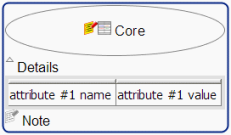

This section explains how Pangloss lets you create a glossary in a mind mapping editor such as Freeplane. We'll first review the internal organsization of items in Freeplane and in a glossary, then we'll see how to makes the mapping between the two structures.
Freeplane Model
The Freeplane model is a straightforward model of what you see on maps. The description below is a simplified view of the actual model (for example, it does not mention free nodes). A more comprehensive description can be found on the Freeplane homepage.
The basic element is called a node
The core of a node contains the most important piece of information. Additional information can be added in a note and in details and attributes. A node may also be decorated with icons, which appear on the left of the node core.

A node with an attribute, a note, two icons and some details.
Each node has a parent (node) and may have children (nodes)
Except from the first node of the map (the so-called root node), all nodes have one parent, which is usually the node from which they have been created.Note that the parent-child relationship can be edited after node creaton.Two nodes having the same parent are called siblings. The children, grand-children, etc. of a node are the descendants of this node. The parent, grand-parent, etc. of a node are the ancestors of this node. The root node is the ancestor of all nodes. A branch is composed of a node and all its descendants.
A glossary (or terminological database) can be modelled with a two-level model:
Entry: The glossary usually contains several Entries. An entry typically contains some conceptual information (e.g. definition) and one or several Terms.
Term: A Term expresses the concept in a given language.
Let's call Feature any piece of information attached either to an Entry or a Term. The diagram to the right shows a glossary Entry containing two Features, and two Terms. One Term contains one feature and the other Term contains two features. Some Features apply only to Entries. Others apply only to Terms. And some Features may apply both to Entries and Terms.